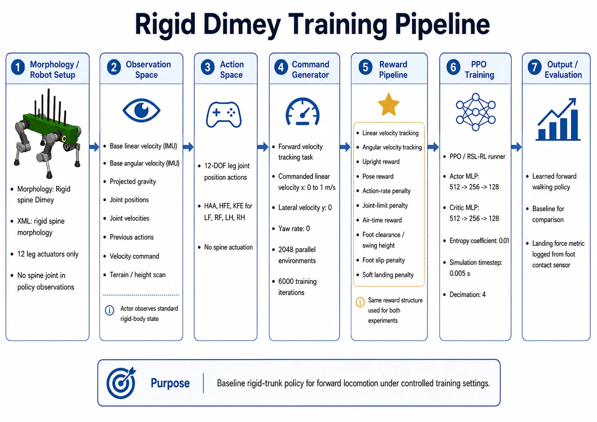
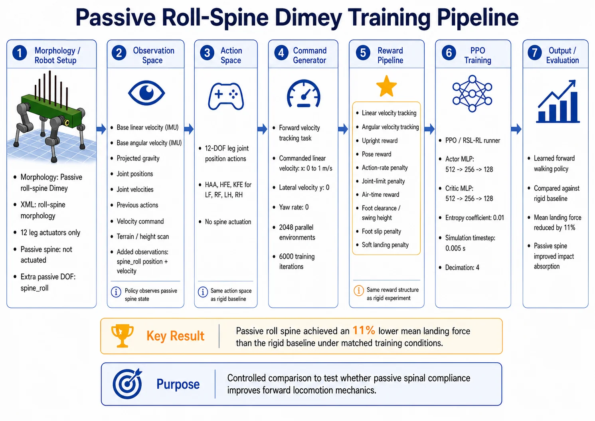
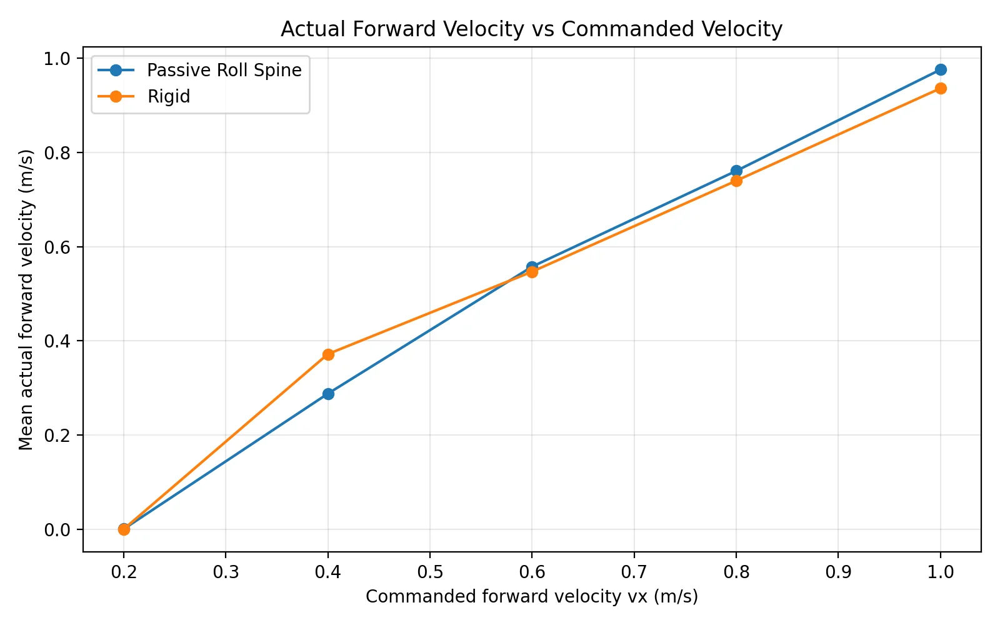
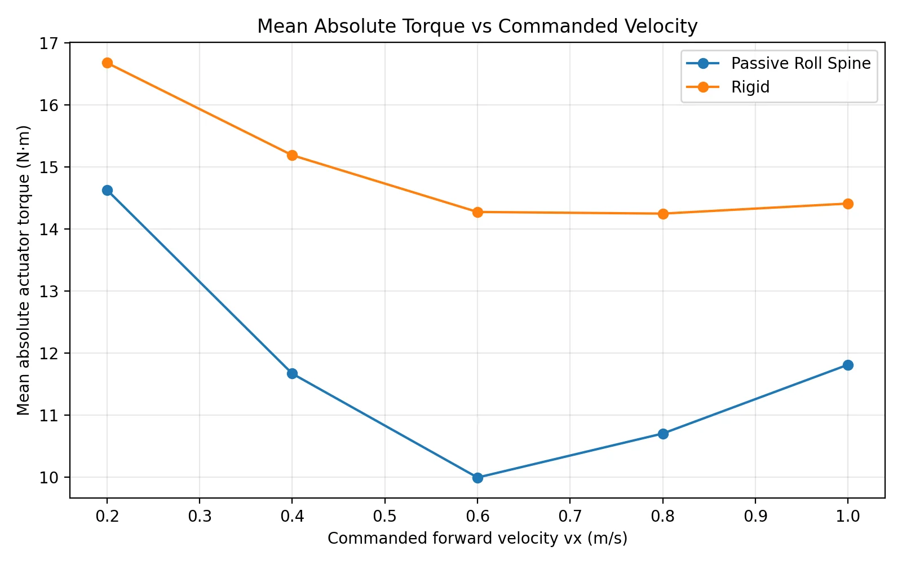
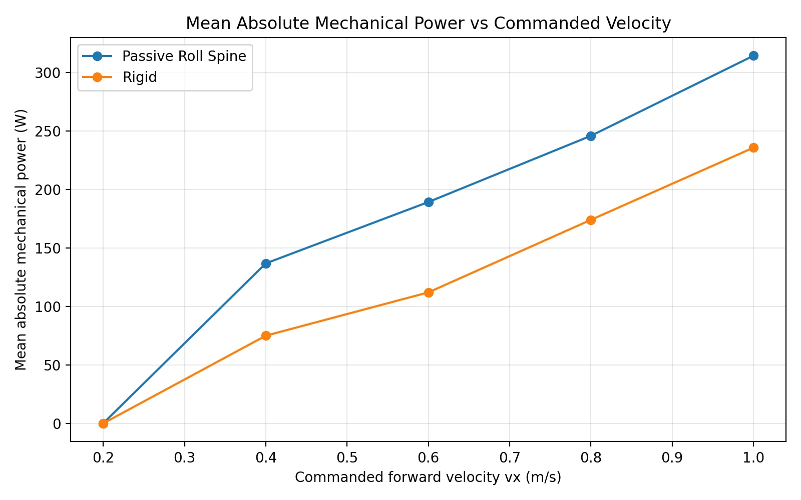
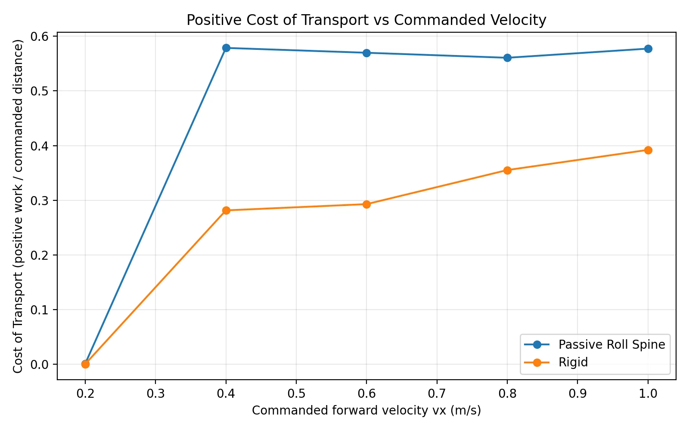

Can spine compliance reduce impact without adding a spine motor?
Dimey is a bio-inspired quadruped research platform. I compared a rigid-trunk model against a passive roll-spine version to test whether adding one unactuated roll degree of freedom could mechanically redistribute touchdown impact while still producing effective learned forward locomotion. This is a controlled research comparison rather than a demo with arbitrary changes to reward terms or actuators.
Hold the training system constant. Change the morphology.
| Variable | Rigid Dimey | Passive roll-spine Dimey |
|---|---|---|
| Morphology | Rigid trunk | Additional passive spine-roll DOF |
| Joint-position actions | 12 leg motors (HAA/HFE/KFE) | Same 12 leg motors; no spine command |
| Observations | Base state, projected gravity, leg position/velocity, prior action, velocity commands, height scan | Same plus passive spine-roll position and velocity |
| Velocity task | Forward 0–1 m/s; lateral and yaw commands zero | Identical |
| Training | 2,048 parallel environments; 6,000 iterations | Identical |
| Policy architecture | PPO with actor/critic 512 → 256 → 128 | Identical |
| Low-level timing | 0.005 s simulation; decimation 4 → 50 Hz | Identical |
Both policies used matching reward categories: velocity tracking, stability/uprightness, pose, action rate, joint limits, swing clearance, foot slip, air time and soft landing. A foot-contact sensor captured first-contact force for touchdown measurements. The only intentionally added state inputs in the passive case were spine angle and angular velocity; the spine was not an actuator.


See both Dimey models walking
These are simulation rollouts of the Dimey models. The project does not claim experimental results on physical Dimey hardware.
Softer landings and lighter joint loading—at a power cost
The passive roll-spine model achieved an 11% decrease in mean foot landing force compared with the rigid baseline. The archived torque-vs-speed data show reduced mean absolute actuator torque for passive-spine locomotion at every nonzero tested speed. The energy result is more nuanced: passive spine showed higher mean absolute mechanical power, and its commanded-distance positive cost of transport was higher across the shown 0.4–1.0 m/s range.
10.00 N·m passive vs 14.28 N·m rigid mean absolute actuator torque.
189.13 W passive vs 111.93 W rigid mean absolute mechanical power.
| Forward command | Rigid torque (N·m) | Passive torque (N·m) | Rigid power (W) | Passive power (W) |
|---|---|---|---|---|
| 0.4 m/s | 15.19 | 11.67 | 74.94 | 136.71 |
| 0.6 m/s | 14.28 | 10.00 | 111.93 | 189.13 |
| 0.8 m/s | 14.25 | 10.70 | 173.92 | 245.71 |
| 1.0 m/s | 14.41 | 11.81 | 235.57 | 314.13 |
Source: cot_comparison_summary.csv from the experiment's graphs folder. Torque and power values are simulation-level mean absolute metrics; they are not measured battery energy or per-motor peaks. Low-speed 0.2 m/s CoT is excluded from interpretation because the rigid policy barely moved, making actual-distance-normalized values misleading.




Understand the tradeoff, not just the headline metric
Why can a controller use less torque but more power? Mechanical joint power depends on both torque and joint angular speed. A passive spine can help redistribute contact loads while the learned gait moves the legs faster or through larger motions. The additional motion plausibly explains the increased power, but joint-speed distributions would be needed to verify the mechanism directly.
Research takeaway: adding an unactuated spine joint can improve landing-impact and torque metrics without providing an extra spine control channel. But passive compliance did not reduce every cost: this policy paid more mechanical power and CoT. Better reward design and additional training are the next steps toward a more balanced gait.
- Modeling rigor: matched 12-motor action spaces and PPO settings reduced confounding between morphologies.
- Instrumentation: first-touchdown force logging, motion tracking, joint torque and joint-power analyses made differences measurable.
- Transfer limitation: simulated contact dynamics, passive joint parameters and energy terms require hardware validation before generalizing to real robots.
Source: uploaded Dimey research presentation, experiment writeup, torque vs power flip reasoning, original plots and cot_comparison_summary.csv from the linked Drive folder.